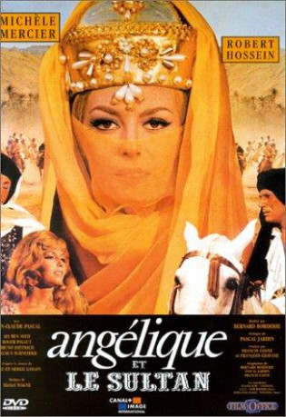

gesehen am 28.01.2018
gesehen am 28.01.2018Alternativ: Angelique and the Sultan (Englischer Titel) gesehen am 28.01.2018
 
 IMDB-Wertung: 6.6 / 10
IMDB-Wertung: 6.6 / 10  Metascore:
Metascore: 
The Angélique series comes to a conclusion in this fifth film. Angélique's unparalleled beauty lands her in trouble. She is captured and brought to the harem of the Mulay Ismail, Sultan of Morocco. However, the rebellious beauty refuses to be tamed...
Jahr: 1968
Dauer: 97 Minuten
FSK: 12
Land: Frankreich Studio: GloriaTonspuren:
Untertitel:
Auflösung: 1080p (1920x816) Größe: 8222 MB
Regisseur: Bernard Borderie
Drehbuch: Hasraf Dulull
Soundtrack: Michel Magne
Darsteller:
 Michèle Mercier als Angélique de Peyrac
Michèle Mercier als Angélique de Peyrac Robert Hossein als Jeoffrey de Peyrac
Robert Hossein als Jeoffrey de Peyrac Ettore Manni als Jason
Ettore Manni als Jason Arturo Dominici als Mezzo Morte (uncredited)
Arturo Dominici als Mezzo Morte (uncredited) Sieghardt Rupp als Millerand (uncredited)
Sieghardt Rupp als Millerand (uncredited)Datei: X:\6-Hexalogie(A-Z)\Angelique\Angélique 5 und der Sultan (1968, FSK12, 1920x816).mkv seit 09.01.2018
Festplatte: HD Collection-3(N-Z)-6(A-Z)
 Es gibt insgesamt 9 Filme in der Gruppe '6-Hexalogie(A-Z)\Angelique'
Es gibt insgesamt 9 Filme in der Gruppe '6-Hexalogie(A-Z)\Angelique'